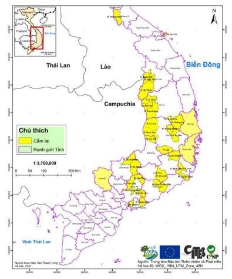

1. Đặc điểm hình thái
Cẩm lai mọc rải rác hoặc thành quần thể nhỏ trong cả ba kiểu rừng: rừng cây gỗ hỗn giao tre-nứa; rừng bán rụng lá cây họ Dầu (Dipterocarpaceae) hoặc Bằng lăng (Lythraceae) mưa mùa nhiệt đới trên đất thấp ở độ cao 100 – 700 m, có khi tới 1200 m so với mặt nước biển; và trong rừng cây lá rộng, thường xanh, mưa mùa nhiệt đới trên đất thấp. Cẩm lai sinh trưởng trên nhiều loại đất khác nhau và sinh trưởng tốt nhất ở loại đất Bazan vàng đỏ hoặc đất bồi tụ tầng dày, nền đất tương đối bằng phẳng, độ dốc nhỏ, thường gặp ở những nơi ẩm và ven sông, suối.
Cây ưa sáng, lúc nhỏ có thể chịu được che bóng. Cây sinh trưởng chậm và thường chiếm tầng cao của tán rừng Khả năng tái sinh hạt và tái sinh chồi tốt. Ra hoa vào tháng 4 – 5, quả chín vào tháng 6 – 12
2. Phân bố
Cẩm lai phân bố tại Quảng Trị (huyện Hướng Hóa), Đà Nẵng (quận Sơn Trà), Kon Tum (huyện Sa Thầy, Ngọc Hồi và Đắk Tô), Gia Lai (huyện Ia Grai, Krông Pa, Đức Cơ và Chư Prông), Đắk Lắk (huyện Ea Kar, Krông Năng và Lắk, Vườn quốc gia Yok Đôn), Đắk Nông (huyện Đắk Mil và Cư Jút), Lâm Đồng (Lang Biang, Lạc Dương và huyện Di Linh), Đồng Nai (Vườn quốc gia Cát Tiên và Khu Bảo tồn Thiên nhiên – Văn hóa Đồng Nai), Phú Yên, Khánh Hòa, Ninh Thuận (huyện Thuận Nam và Ninh Sơn), Bình Thuận (rừng phòng hộ Hàm Thuận Bắc – Đa Mi của huyện Hàm Thuận Bắc), Bình Phước (huyện Bù Đăng và Bù Gia Mập), Tây Ninh và Bà Rịa – Vũng Tàu (huyện Tân Thành và Xuyên Mộc).
